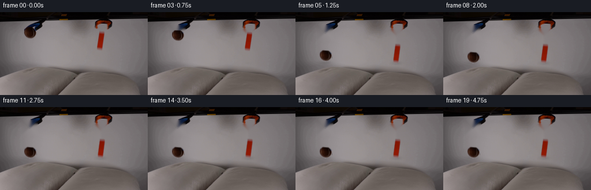
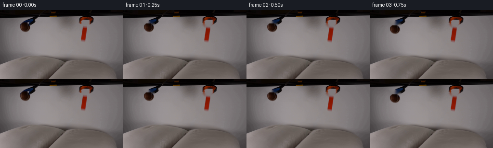

← 本轮 smoke 总览traex/DeepSeek-V4.1-Flash · 0003
text · 256×144 · 4.0 FPS · 20 帧 · 状态 running · 输出 tokens None
原始任务Static locked-off single-shot with fixed frame throughout filmed with constant framerate in real-time. The scene shows a realistic scientific demonstration. The scene only contains the described setup and actions. Two pillows are on a table and two grabber tools are positioned above them. The grabber tools release the brown tennis ball and the orange block.
当前保存结果
此结果可播放，但该运行尚未通过最终提交审核。页面展示不代表评测通过。
已保存候选与代码修改
这里按时间展示外部捕获的候选，每份均可单独播放。保存新版本不等于完成视觉检查；下方工具证据记录实际看过的图。
候选 01 · 2026-11-08T18:43:07.818443+00:00 · 点开播放与检查图
inspection.png

transition_check.png

代码变化
--- 上一保存版本
+++ 本次保存版本
@@ -0,0 +1,220 @@
+from pathlib import Path
+
+import cv2
+import numpy as np
+from PIL import Image
+from scipy.ndimage import binary_fill_holes, gaussian_filter
+
+import artifact_io
+
+
+W, H, N, FPS = 256, 144, 20, 4.0
+CASE_DIR = Path(__file__).resolve().parent
+
+
+def _largest_component(mask):
+ count, labels, stats, _ = cv2.connectedComponentsWithStats(
+ mask.astype(np.uint8), connectivity=8
+ )
+ if count <= 1:
+ return mask.astype(bool)
+ areas = stats[1:, cv2.CC_STAT_AREA]
+ return labels == (1 + int(np.argmax(areas)))
+
+
+def _soft_alpha(mask, sigma=0.65):
+ alpha = gaussian_filter(mask.astype(np.float32), sigma=sigma)
+ return np.clip(alpha * 1.18, 0.0, 1.0)
+
+
+def _extract_sprite(image, region, kind):
+ x0, y0, x1, y1 = region
+ crop = image[y0:y1, x0:x1].astype(np.float32)
+ r, g, b = np.moveaxis(crop, 2, 0)
+ yy, xx = np.mgrid[y0:y1, x0:x1]
+ mx = crop.max(axis=2)
+
+ if kind == "ball":
+ cx, cy = 51.5, 36.4
+ inside = ((xx - cx) / 11.2) ** 2 + ((yy - cy) / 9.7) ** 2 <= 1.0
+ color = (r > g + 7) & (r > b + 5) & (mx > 18)
+ dark = (mx < 78) & (yy >= 28)
+ mask = inside & (color | dark)
+ else:
+ inside = (
+ (xx >= x0 + 1)
+ & (xx <= x1 - 2)
+ & (yy >= y0 + 1)
+ & (yy <= y1 - 2)
+ )
+ color = (r > g + 15) & (r > b + 12) & (r > 38)
+ mask = inside & color
+
+ mask = binary_fill_holes(mask)
+ mask = _largest_component(mask)
+ kernel = np.ones((3, 3), np.uint8)
+ mask = cv2.morphologyEx(mask.astype(np.uint8), cv2.MORPH_CLOSE, kernel)
+ alpha = _soft_alpha(mask, sigma=0.72)
+ return crop, alpha
+
+
+def _remove_objects(image, regions):
+ mask = np.zeros((H, W), np.uint8)
+ for x0, y0, x1, y1 in regions:
+ mask[y0:y1, x0:x1] = 1
+ mask = cv2.dilate(mask, np.ones((5, 5), np.uint8), iterations=1)
+ return cv2.inpaint(
+ image.astype(np.uint8), mask * 255, 4, cv2.INPAINT_TELEA
+ ).astype(np.float32)
+
+
+def _warp_sprite(rgb, alpha, angle=0.0, scale=1.0):
+ h, w = alpha.shape
+ center = ((w - 1) * 0.5, (h - 1) * 0.5)
+ matrix = cv2.getRotationMatrix2D(center, angle, scale)
+ warped_rgb = cv2.warpAffine(
+ rgb,
+ matrix,
+ (w, h),
+ flags=cv2.INTER_LINEAR,
+ borderMode=cv2.BORDER_CONSTANT,
+ borderValue=(0, 0, 0),
+ )
+ warped_alpha = cv2.warpAffine(
+ alpha,
+ matrix,
+ (w, h),
+ flags=cv2.INTER_LINEAR,
+ borderMode=cv2.BORDER_CONSTANT,
+ borderValue=0,
+ )
+ return warped_rgb, np.clip(warped_alpha, 0.0, 1.0)
+
+
+def _paste(canvas, rgb, alpha, center_x, center_y):
+ h, w = alpha.shape
+ left = int(round(center_x - (w - 1) * 0.5))
+ top = int(round(center_y - (h - 1) * 0.5))
+ right, bottom = left + w, top + h
+
+ sx0, sy0 = max(0, -left), max(0, -top)
+ sx1, sy1 = w - max(0, right - W), h - max(0, bottom - H)
+ dx0, dy0 = max(0, left), max(0, top)
+ dx1, dy1 = min(W, right), min(H, bottom)
+ if dx0 >= dx1 or dy0 >= dy1:
+ return
+
+ src_rgb = rgb[sy0:sy1, sx0:sx1]
+ src_a = alpha[sy0:sy1, sx0:sx1, None]
+ dst = canvas[dy0:dy1, dx0:dx1]
+ canvas[dy0:dy1, dx0:dx1] = dst * (1.0 - src_a) + src_rgb * src_a
+
+
+def _add_contact_shadow(canvas, center_x, surface_y, width, height, opacity):
+ yy, xx = np.mgrid[0:H, 0:W]
+ ellipse = (
+ ((xx - center_x) / max(width, 1.0)) ** 2
+ + ((yy - surface_y) / max(height, 1.0)) ** 2
+ )
+ shadow = np.exp(-2.4 * ellipse).astype(np.float32)
+ shadow = gaussian_filter(shadow, 1.15)
+ factor = 1.0 - opacity * shadow[:, :, None]
+ canvas *= factor
+
+
+def _fall_state(t, release, distance, gravity, restitution):
+ """Return vertical offset, bounce lift, and normalized impact state."""
+ if t <= release:
+ return 0.0, 0.0, 0.0, 0.0
+
+ tau = t - release
+ fall_time = np.sqrt(2.0 * distance / gravity)
+ if tau <= fall_time:
+ offset = 0.5 * gravity * tau * tau
+ progress = np.clip(offset / distance, 0.0, 1.0)
+ return offset, 0.0, 0.0, progress
+
+ speed = gravity * fall_time
+ bounce_speed = restitution * speed
+ bounce_time = 2.0 * bounce_speed / gravity
+ tau_b = tau - fall_time
+ if tau_b <= bounce_time:
+ lift = bounce_speed * tau_b - 0.5 * gravity * tau_b * tau_b
+ lift = max(0.0, lift)
+ return distance, lift, 1.0 - lift / max(distance * 0.06, 1.0), 1.0
+
+ return distance, 0.0, 0.0, 1.0
+
+
+def main():
+ first = np.asarray(Image.open(CASE_DIR / "first_frame.png").convert("RGB"))
+ assert first.shape == (H, W, 3)
+
+ ball_region = (39, 24, 64, 48)
+ block_region = (165, 31, 184, 67)
+ ball_rgb, ball_alpha = _extract_sprite(first, ball_region, "ball")
+ block_rgb, block_alpha = _extract_sprite(first, block_region, "block")
+
+ clean = _remove_objects(first, [ball_region, block_region])
+ # The exact source frame is the required opening image.
+ frames = np.empty((N, H, W, 3), dtype=np.uint8)
+ frames[0] = first
+
+ ball_center0 = (51.5, 36.0)
+ block_center0 = (174.0, 49.0)
+ ball_surface = 86.0
+ block_surface = 87.0
+ ball_distance = ball_surface - 9.0 - ball_center0[1]
+ block_distance = block_surface - 16.5 - block_center0[1]
+
+ for index in range(1, N):
+ t = index / FPS
+ frame = clean.copy()
+
+ ball_dy, ball_lift, ball_impact, ball_progress = _fall_state(
+ t, release=0.62, distance=ball_distance, gravity=360.0, restitution=0.25
+ )
+ block_dy, block_lift, block_impact, block_progress = _fall_state(
+ t, release=0.72, distance=block_distance, gravity=360.0, restitution=0.22
+ )
+
+ # Soft contact shadows expand as each object approaches the cushion.
+ shadow_ball = 0.025 + 0.11 * ball_progress
+ shadow_block = 0.020 + 0.10 * block_progress
+ _add_contact_shadow(
+ frame,
+ ball_center0[0] - 1.0 + 1.8 * ball_progress,
+ ball_surface + 1.0,
+ 10.0 + 4.0 * ball_progress,
+ 2.2 + 1.5 * ball_progress,
+ shadow_ball,
+ )
+ _add_contact_shadow(
+ frame,
+ block_center0[0] + 0.8 * block_progress,
+ block_surface + 1.0,
+ 8.5 + 3.0 * block_progress,
+ 2.5 + 1.4 * block_progress,
+ shadow_block,
+ )
+
+ ball_angle = -5.0 * ball_progress + 3.0 * ball_impact
+ block_angle = 1.4 * np.sin(2.2 * block_progress) + 3.2 * block_impact
+ b_rgb, b_alpha = _warp_sprite(ball_rgb, ball_alpha, angle=ball_angle)
+ k_rgb, k_alpha = _warp_sprite(block_rgb, block_alpha, angle=block_angle)
+
+ ball_x = ball_center0[0] - 0.8 * ball_progress + 1.8 * ball_impact
+ ball_y = ball_center0[1] + ball_dy - ball_lift
+ block_x = block_center0[0] + 0.5 * block_progress
+ block_y = block_center0[1] + block_dy - block_lift
+
+ _paste(frame, k_rgb, k_alpha, block_x, block_y)
+ _paste(frame, b_rgb, b_alpha, ball_x, ball_y)
+
+ frames[index] = np.clip(np.rint(frame), 0, 255).astype(np.uint8)
+
+ artifact_io.save(frames, CASE_DIR)
+
+
+if __name__ == "__main__":
+ main()
候选 02 · 2026-11-08T18:43:09.608133+00:00 · 点开播放与检查图
inspection.png

transition_check.png

代码变化
代码未变化；重新保存了产物。
可观测工具行为
命令 1 · 2026-11-08T18:37:00.675381+00:00/bin/bash -c "pwd && rg --files -g '"'!*.pyc'"' -g '"'!__pycache__'"' | sort"
exit 0 命令 2 · 2026-11-08T18:37:00.789667+00:00/bin/bash -c 'cat prompt.txt'
exit 0 命令 3 · 2026-11-08T18:37:01.092593+00:00/bin/bash -c 'cat GENERATION_RULES.md'
exit 0 命令 4 · 2026-11-08T18:37:01.286549+00:00/bin/bash -c 'file first_frame.png 2>/dev/null; identify first_frame.png 2>/dev/null || true; ls -lah'
exit 0 命令 5 · 2026-11-08T18:37:10.881062+00:00/bin/bash -c "sed -n '1,240p' artifact_io.py"
exit 0 命令 6 · 2026-11-08T18:37:11.124453+00:00/bin/bash -c "sed -n '1,260p' player_template.html"
exit 0 命令 7 · 2026-11-08T18:37:11.575814+00:00/bin/bash -c "python - <<'PY'
from PIL import Image
import numpy as np
im=np.asarray(Image.open('first_frame.png').convert('RGB'))
print(im.shape, im.dtype, im.min(), im.max())
# dominant colors exact
u,c=np.unique(im.reshape(-1,3),axis=0,return_counts=True)
for i in np.argsort(c)[-30:][::-1]: print(tuple(u[i]), int(c[i]))
# row/col summary
for y in range(0,144,8):
a=im[y:y+8]
print('row',y, 'mean', np.round(a.mean((0,1)),1), 'std',np.round(a.std((0,1)),1))
PY"exit 0 命令 8 · 2026-11-08T18:37:21.481888+00:00/bin/bash -c "python - <<'PY'
from PIL import Image
import numpy as np
from collections import Counter
im=np.asarray(Image.open('first_frame.png').convert('RGB')).astype(np.float32)
h,w,_=im.shape
# rgb quantized 16
q=(im//16)*16
u,c=np.unique(q.reshape(-1,3),axis=0,return_counts=True)
for i in np.argsort(c)[-25:][::-1]: print('q',tuple(map(int,u[i])),int(c[i]))
# HSV simple
mx=im.max(2); mn=im.min(2); sat=(mx-mn)/np.maximum(mx,1)
print('sat percentiles',np.percentile(sat,[50,75,90,95,97,98,99,99.5,99.9]))
for th in [.12,.18,.25,.35,.5]:
m=sat>th
ys,xs=np.where(m)
print('sat>',th,'count',m.sum(),'bbox', (xs.min(),ys.min(),xs.max(),ys.max()) if len(xs) else None)
# Print coarse stats per 8x8 tile: dominant hue-ish, brightness, sat
print('TILE GRID mean RGB / sat (16x18)')
for ty in range(18):
vals=[]
for tx in range(16):
a=im[ty*8:(ty+1)*8,tx*8:(tx+1)*8]
m=a.mean((0,1)); s=(a.max(2)-a.min(2)).mean()/max(a.mean(),1)
vals.append(f'{int(m[0]):3d},{int(m[1]):3d},{int(m[2]):3d}/{s:.2f}')
print(f'{ty*8:3d}', ' | '.join(vals))
PY"exit 0 命令 9 · 2026-11-08T18:37:26.499804+00:00/bin/bash -c "python - <<'PY'
from PIL import Image
import numpy as np
im=np.asarray(Image.open('first_frame.png').convert('RGB')).astype(np.int16)
h,w,_=im.shape
# print classification map 4x4 blocks: use letters based hue / darkness / brightness
for y0 in range(0,h,4):
s=''
for x0 in range(0,w,4):
a=im[y0:y0+4,x0:x0+4].reshape(-1,3).mean(0)
r,g,b=a; mx=max(a);mn=min(a);sat=(mx-mn)/max(mx,1)
if mx<18: ch=' '
elif sat>.35 and r>g*1.2 and r>b*1.5: ch='R'
elif sat>.3 and b>r*1.15: ch='B'
elif sat>.25 and g>=r*.8 and g>b*.95: ch='G'
elif sat>.18 and r>b*1.1: ch='b'
elif mx>145: ch='W'
elif mx>120: ch='.'
elif mx>90: ch=':'
elif mx>60: ch=','
else: ch='-'
s+=ch
print(f'{y0:03d} {s}')
PY"exit 0 命令 10 · 2026-11-08T18:37:32.589177+00:00/bin/bash -c "python - <<'PY'
from PIL import Image
import numpy as np
im=np.asarray(Image.open('first_frame.png').convert('RGB')).astype(np.float32)
# detect high saturation warm pixels
r,g,b=np.moveaxis(im,2,0)
mx=im.max(2);mn=im.min(2);sat=(mx-mn)/np.maximum(mx,1)
m=(sat>.25)&(r>g*1.15)&(r>b*1.3)&(mx>40)
ys,xs=np.where(m)
print('warm sat pixels',len(xs),'bbox',xs.min(),ys.min(),xs.max(),ys.max())
# connected comps 8-neighbor
from scipy.ndimage import label
lab,n=label(m,np.ones((3,3)))
for i in range(1,n+1):
yy,xx=np.where(lab==i)
if len(xx)>5:
print(i,len(xx),'bbox',xx.min(),yy.min(),xx.max(),yy.max(),'mean',im[yy,xx].mean(0).round(1))
# blue
m2=(sat>.25)&(b>r*1.2)&(mx>30)
lab,n=label(m2,np.ones((3,3)))
print('blue')
for i in range(1,n+1):
yy,xx=np.where(lab==i)
if len(xx)>5:
print(i,len(xx),'bbox',xx.min(),yy.min(),xx.max(),yy.max(),'mean',im[yy,xx].mean(0).round(1))
# white gray objects via low sat bright
m3=(sat<.09)&(mx>145)
lab,n=label(m3,np.ones((3,3)))
print('bright low sat')
for i in range(1,n+1):
yy,xx=np.where(lab==i)
if len(xx)>30:
print(i,len(xx),'bbox',xx.min(),yy.min(),xx.max(),yy.max(),'mean',im[yy,xx].mean(0).round(1))
PY"exit 0 命令 11 · 2026-11-08T18:37:41.879916+00:00/bin/bash -c "python - <<'PY'
from PIL import Image
import numpy as np
im=np.asarray(Image.open('first_frame.png').convert('RGB'))
# print unique colors and color at grid every 8 px
for y in range(0,144,8):
print('y',y)
for x in range(0,256,16):
a=im[y:y+8,x:x+16].reshape(-1,3)
m=a.mean(0).astype(int)
print(f'{x:3}:{m[0]:3},{m[1]:3},{m[2]:3}',end=' ')
print()
PY"exit 0 命令 12 · 2026-11-08T18:37:46.803988+00:00/bin/bash -c "python - <<'PY'
from PIL import Image
import numpy as np
im=np.asarray(Image.open('first_frame.png').convert('RGB')).astype(np.float32)
# masks for red object(s), blue, white pillow
r,g,b=np.moveaxis(im,2,0)
red=(r>g*1.35)&(r>b*1.4)&(r>45)
blue=(b>r*1.35)&(b>g*1.2)&(b>25)
white=(im.min(2)>125)&((im.max(2)-im.min(2))<18)
for name,m in [('red',red),('blue',blue),('white',white)]:
print('\\n',name)
for y in range(0,144,4):
xs=np.where(m[y:y+4].any(0))[0]
if len(xs):
# segments
d=np.diff(xs); starts=np.r_[0,np.where(d>1)[0]+1]; ends=np.r_[np.where(d>1)[0],len(xs)-1]
print(y,[(int(xs[s]),int(xs[e])) for s,e in zip(starts,ends)])
PY"exit 0 命令 13 · 2026-11-08T18:37:51.958943+00:00/bin/bash -c "python - <<'PY'
from PIL import Image
import numpy as np
im=np.asarray(Image.open('first_frame.png').convert('RGB'))
# save ascii around key zones with RGB hex-ish brightness hue chars, use bigger 2x2 blocks
def dump(x0,x1,y0,y1,step=2):
for y in range(y0,y1,step):
s=''
for x in range(x0,x1,step):
a=im[y:y+step,x:x+step].reshape(-1,3).mean(0)
r,g,b=a
if max(a)<10: c=' '
elif r>g*1.5 and r>b*1.5 and r>40: c='R'
elif b>r*1.25 and b>g*1.1 and b>20: c='B'
elif max(a)-min(a)<14 and max(a)>130: c='#'
elif max(a)>135: c='@'
elif max(a)>115: c='+'
elif max(a)>95: c='.'
elif max(a)>70: c=','
else: c=':'
s+=c
print(f'{y:03d} {s}')
print('upper')
dump(0,256,0,40,2)
PY"exit 0 命令 14 · 2026-11-08T18:37:57.297578+00:00/bin/bash -c "python - <<'PY'
from PIL import Image
import numpy as np
im=np.asarray(Image.open('first_frame.png').convert('RGB'))
# print pixel grid x 25-80 y 10-45 in hex chars compact colors as rgb values
for y in range(10,46,2):
s=''
for x in range(20,85,2):
a=im[y:y+2,x:x+2].reshape(-1,3).mean(0)
r,g,b=a
if max(a)<10: c=' '
elif r>g*1.5 and r>b*1.5 and r>40: c='R'
elif b>r*1.25 and b>g*1.1 and b>20: c='B'
elif max(a)-min(a)<14 and max(a)>130: c='#'
elif max(a)>135: c='@'
elif max(a)>115: c='+'
elif max(a)>95: c='.'
elif max(a)>70: c=','
else: c=':'
s+=c
print(f'{y:03d} {s}')
print('values around x 40-70 y 25-45')
for y in [25,28,30,32,34,36,38,40,42,44]:
print(y,[tuple(im[y,x]) for x in range(38,72,3)])
PY"exit 0 命令 15 · 2026-11-08T18:38:09.804858+00:00/bin/bash -c "python - <<'PY'
from PIL import Image
import numpy as np
im=np.asarray(Image.open('first_frame.png').convert('RGB'))
# nearest palette categories based on hue, brightness
r,g,b=np.moveaxis(im.astype(float),2,0)
mx=im.max(2).astype(float); mn=im.min(2).astype(float); sat=(mx-mn)/np.maximum(mx,1)
# classify
out=np.full(im.shape[:2],'.',dtype='<U1')
out[mx<20]=' '
out[(mx>=20)&(mx<50)]='-'
out[(mx>=50)&(mx<80)]=','
out[(mx>=80)&(mx<105)]=':'
out[(mx>=105)&(mx<125)]='.'
out[(mx>=125)&(mx<145)]='+'
out[mx>=145]='#'
# warm red / blue overlay
out[(sat>.22)&(r>g*1.2)&(r>b*1.2)&(mx>35)]='R'
out[(sat>.22)&(b>r*1.2)&(b>g*1.1)&(mx>20)]='B'
out[(sat>.18)&(g>r*1.15)&(g>b*1.05)&(mx>25)]='G'
# output 2x2 blocks choosing modal category
for y in range(0,144,2):
s=''
for x in range(0,256,2):
block=out[y:y+2,x:x+2].ravel()
vals,c=np.unique(block,return_counts=True); c=block[np.argmax(c)]
s+=c
print(f'{y:03d} {s}')
PY"exit 0 命令 16 · 2026-11-08T18:38:15.182705+00:00/bin/bash -c "python - <<'PY'
from PIL import Image
import numpy as np
im=np.asarray(Image.open('first_frame.png').convert('RGB'))
# upscale nearest and save crops to tmp for possible pixel values; no visual tools, just files
for name,box in [('left',(20,10,90,70)),('right',(145,10,205,70)),('center',(30,25,160,105)),('bottom',(0,90,256,144))]:
Image.fromarray(im).crop(box).resize(((box[2]-box[0])*6,(box[3]-box[1])*6),Image.Resampling.NEAREST).save('.tmp/'+name+'.png')
print('saved')
# color clusters kmeans-ish via PIL quantize
q=Image.fromarray(im).quantize(colors=24,method=Image.Quantize.MEDIANCUT)
pal=np.array(q.getpalette()).reshape(-1,3)[:24]
counts=np.bincount(np.array(q).ravel(),minlength=24)
for i in np.argsort(counts)[::-1]: print(i,tuple(pal[i]),counts[i])
PY"exit 0 命令 17 · 2026-11-08T18:38:22.031838+00:00/bin/bash -c "python - <<'PY'
from PIL import Image
import numpy as np
im=np.asarray(Image.open('first_frame.png').convert('RGB'))
# classify rough objects via semantic RGB thresholds and report bounding boxes/centroids
r,g,b=[im[:,:,i].astype(float) for i in range(3)]
mx=im.max(2).astype(float); mn=im.min(2).astype(float); sat=(mx-mn)/np.maximum(mx,1)
# red-orange mask: red > green by 30 and red > blue by 25
m=(r>50)&(r-g>30)&(r-b>25)
from scipy.ndimage import label, binary_dilation, binary_closing
for n,m in [('red',m),('blue',(b>30)&(b-r>20)&(b-g>8)),('verybright',(mx>155)&(sat<.12))]:
print(n, m.sum())
lab,num=label(m,np.ones((3,3)))
for i in range(1,num+1):
yy,xx=np.where(lab==i)
if len(xx)>10:
print(' ',len(xx), 'bbox',xx.min(),yy.min(),xx.max(),yy.max(),'centroid',xx.mean(),yy.mean(),'mean',im[yy,xx].mean(0).round(1))
PY"exit 0 命令 18 · 2026-11-08T18:38:40.400356+00:00/bin/bash -c "python - <<'PY'
from PIL import Image
import numpy as np
im=np.asarray(Image.open('first_frame.png').convert('RGB')).astype(int)
# exact-ish row scans for key x/y. print color runs by quantized thresholds at selected y
for y in [4,8,12,14,16,18,20,22,24,26,28,30,32,34,36,38,40,42,44,46,48,50,52,54,56,58,60,62,64]:
runs=[]; last=None; st=0
for x in range(256):
r,g,b=im[y,x]
mx=max(r,g,b); mn=min(r,g,b); sat=(mx-mn)/max(mx,1)
if mx<15: c='k'
elif r>g+30 and r>b+20 and r>45: c='R' if r>100 else 'r'
elif b>r+20 and b>g+8 and b>25: c='B'
elif mx>145 and sat<.10: c='W'
elif mx>130: c='w'
elif mx>105: c='g'
elif mx>75: c='d'
else: c='x'
if c"'!=last:
if last is not None: runs.append((st,x-1,last))
st=x;last=c
runs.append((st,255,last))
# only runs within 20-220 or meaningful colors
print(f'"'y={y:03d}', ' '.join(f'{a}-{b}:{c}' for a,b,c in runs if b-a>=2 and (a>=20 or b<=220)))
PY"exit 0 命令 19 · 2026-11-08T18:38:46.831494+00:00/bin/bash -c "python - <<'PY'
from PIL import Image
import numpy as np
im=np.asarray(Image.open('first_frame.png').convert('RGB'))
# crop coords print with 1px chars for top area, 2 rows per line, actual categories; useful map
r,g,b=np.moveaxis(im.astype(float),2,0);mx=im.max(2).astype(float);mn=im.min(2).astype(float);sat=(mx-mn)/np.maximum(mx,1)
for y in range(0,100,2):
s=''
for x in range(0,256,2):
a=im[y:y+2,x:x+2].reshape(-1,3).astype(float).mean(0); rr,gg,bb=a; mm=max(a); ss=(mm-min(a))/max(mm,1)
if mm<10:c=' '
elif rr>gg+30 and rr>bb+25 and rr>45:c='R'
elif bb>rr+20 and bb>gg+8 and bb>25:c='B'
elif mm>145 and ss<.10:c='W'
elif mm>130:c='w'
elif mm>105:c='g'
elif mm>75:c='d'
else:c='x'
s+=c
print(f'{y:03d} {s}')
PY"exit 0 命令 20 · 2026-11-08T18:39:04.745079+00:00/bin/bash -c "python - <<'PY'
from PIL import Image
import numpy as np
from scipy.ndimage import label
im=np.asarray(Image.open('first_frame.png').convert('RGB')).astype(int)
r,g,b=np.moveaxis(im,2,0)
for name,m in [
('red1',(r>75)&(r>g*1.6)&(r>b*1.8)),
('red2',(r>100)&(r>g*1.6)&(r>b*1.8)),
('orange',(r>80)&(r>g*1.35)&(r>b*1.4)),
('brown',(r>25)&(r<105)&(r>g*1.4)&(r>b*1.3)),
('blue',(b>25)&(b>r*1.4)&(b>g*1.2))]:
lab,n=label(m,np.ones((3,3)))
print('\\n',name,m.sum(),n)
for i in range(1,n+1):
yy,xx=np.where(lab==i)
if len(xx)>3:
print(len(xx),'bbox',xx.min(),yy.min(),xx.max(),yy.max(),'mean',im[yy,xx].mean(0).round(0),'max',im[yy,xx].max(0))
PY"exit 0 命令 21 · 2026-11-08T18:39:11.077674+00:00/bin/bash -c "python - <<'PY'
from PIL import Image
import numpy as np
im=np.asarray(Image.open('first_frame.png').convert('RGB')).astype(float)
# compute masks and scan extents for white pillow, orange block, ball. Determine likely pillow by brightness
mx=im.max(2); mn=im.min(2); sat=(mx-mn)/np.maximum(mx,1)
# smooth brightness threshold to see white shapes
for th in [120,130,140,145,150]:
m=(mx>th)&(sat<.12)
# rows spans > 5
print('th',th,'count',m.sum())
for y in range(0,144,8):
xs=np.where(m[y:y+8].any(0))[0]
if len(xs): print(y, int(xs.min()),int(xs.max()),len(xs))
PY"exit 0 命令 22 · 2026-11-08T18:39:21.033235+00:00/bin/bash -c 'command -v chafa || command -v viu || command -v img2txt || command -v jp2 || true'
exit 0 命令 23 · 2026-11-08T18:39:26.114836+00:00/bin/bash -c "python - <<'PY'
from PIL import Image
import numpy as np
im=np.asarray(Image.open('first_frame.png').convert('RGB'))
# map colored x/y with letters for color mask. print 1 char per pixel? focus upper object x150-200
print('Right object color map x150-205 y10-68, 1 char per px compressed every row')
for y in range(10,69):
s=''
for x in range(150,206):
r,g,b=map(int,im[y,x]); mx=max(r,g,b);mn=min(r,g,b);sat=(mx-mn)/max(mx,1)
if mx<20:c=' '
elif r>g+30 and r>b+25 and r>45:c='R'
elif b>r+20 and b>g+8 and b>25:c='B'
elif mx>145 and sat<.10:c='W'
elif mx>130:c='w'
elif mx>105:c='g'
elif mx>75:c='d'
else:c='x'
s+=c
print(f'{y:02d} {s}')
PY"exit 0 命令 24 · 2026-11-08T18:39:30.781538+00:00/bin/bash -c "python - <<'PY'
from PIL import Image
import numpy as np
im=np.asarray(Image.open('first_frame.png').convert('RGB')).astype(int)
# sample RGB at specific points
pts=[(50,15),(100,20),(120,20),(130,30),(140,40),(150,45),(165,45),(185,45),(200,45),(70,45),(90,50),(60,80),(120,80),(160,80),(200,80),(30,80),(120,100),(100,110),(130,110),(160,110),(200,110),(250,60),(250,100),(250,130)]
for x,y in pts: print((x,y),tuple(im[y,x]))
PY"exit 0 命令 25 · 2026-11-08T18:39:47.436111+00:00/bin/bash -c "python - <<'PY'
from PIL import Image
import numpy as np
from scipy.ndimage import gaussian_filter, sobel
im=np.asarray(Image.open('first_frame.png').convert('L')).astype(float)
# Edge magnitude, ascii 2x2 blocks around object regions
g=gaussian_filter(im,1.0)
e=np.hypot(sobel(g,0),sobel(g,1))
for y in range(20,105,2):
s=''
for x in range(0,256,2):
v=e[y:y+2,x:x+2].max()
s += '#' if v>80 else '+' if v>40 else '.' if v>18 else ' '
print(f'{y:03d} {s}')
PY"exit 0 命令 26 · 2026-11-08T18:39:53.724365+00:00/bin/bash -c "python - <<'PY'
from PIL import Image
import numpy as np
from scipy.ndimage import gaussian_filter
im=np.asarray(Image.open('first_frame.png').convert('RGB')).astype(float)
# list high chroma colors by semantic region (warm x 150-200 y 10-70)
for boxname,(x0,y0,x1,y1) in {'ball':(35,15,75,50),'block':(158,8,198,70)}.items():
print('\\n',boxname)
a=im[y0:y1,x0:x1].reshape(-1,3)
# colors where max-min>15
a=a[(a.max(1)-a.min(1))>15]
# kmeans manual
from sklearn.cluster import KMeans
if len(a)>0:
km=KMeans(n_clusters=min(8,len(a)),random_state=0,n_init=5).fit(a)
counts=np.bincount(km.labels_)
for i in np.argsort(counts)[::-1]: print(counts[i],km.cluster_centers_[i].round(1))
PY"exit 0 命令 27 · 2026-11-08T18:39:59.379605+00:00/bin/bash -c "python - <<'PY'
from PIL import Image
import numpy as np
im=np.asarray(Image.open('first_frame.png').convert('RGB')).astype(int)
# print ball crop x35-75 y15-50 char map, 1 char per pixel, x labels
for y in range(14,51):
s=''
for x in range(35,76):
r,g,b=im[y,x]; mx=max(r,g,b);mn=min(r,g,b)
if mx<20:c=' '
elif r>g+30 and r>b+25 and r>45:c='R'
elif b>r+20 and b>g+8 and b>25:c='B'
elif mx>145 and mx-mn<18:c='W'
elif mx>130:c='w'
elif mx>105:c='g'
elif mx>75:c='d'
else:c='x'
s+=c
print(f'{y:02d} {s}')
print(' '+''.join(str(x//10%10) for x in range(35,76)))
print(' '+''.join(str(x%10) for x in range(35,76)))
PY"exit 0 命令 28 · 2026-11-08T18:40:04.292340+00:00/bin/bash -c "python - <<'PY'
from PIL import Image
import numpy as np
im=np.asarray(Image.open('first_frame.png').convert('RGB'))
# print thumbnails as block average colors in rows of hex? use emoji? No. Report matrix of RGB at 8x8 center points as compressed numeric
for y in range(12,100,8):
print('y',y, end=' ')
for x in range(16,224,16):
a=im[y-4:y+4,x-8:x+8].reshape(-1,3).mean(0).astype(int)
print('%02x%02x%02x'%tuple(a),end=' ')
print()
PY"exit 0 命令 29 · 2026-11-08T18:40:13.984467+00:00/bin/bash -c "python - <<'PY'
from PIL import Image
import numpy as np
im=np.asarray(Image.open('first_frame.png').convert('RGB')).astype(int)
# print grayscale values for ball crop 35-76 y15-50 using levels 0-9
for y in range(15,51):
s=''
for x in range(35,76):
v=int(im[y,x].mean()//16)
s+=str(v)
print(f'{y:02d} {s}')
print(' '+''.join(str(x//10%10) for x in range(35,76)))
print(' '+''.join(str(x%10) for x in range(35,76)))
PY"exit 0 命令 30 · 2026-11-08T18:40:18.395717+00:00/bin/bash -c "python - <<'PY'
from PIL import Image
import numpy as np
im=np.asarray(Image.open('first_frame.png').convert('RGB')).astype(int)
# print actual rgb sample for ball dark pixels, derive shape mask via brightness <50 etc
for y in range(16,46,3):
print('y',y, [(x,tuple(im[y,x])) for x in range(40,66,2)])
PY"exit 0 命令 31 · 2026-11-08T18:40:23.696456+00:00/bin/bash -c "python - <<'PY'
from PIL import Image
import numpy as np
im=np.asarray(Image.open('first_frame.png').convert('RGB'))
# report large connected components using color distance to background local, edge detection
# use simple foreground via saturation or dark/light deviation from robust blur
from scipy.ndimage import median_filter, gaussian_filter, label
base=gaussian_filter(im.astype(float),(8,8,0))
d=np.abs(im-base).mean(2)
m=d>18
lab,n=label(m,np.ones((3,3)))
for i in range(1,n+1):
yy,xx=np.where(lab==i)
if len(xx)>50:
print(len(xx),'bbox',xx.min(),yy.min(),xx.max(),yy.max(),'centroid',xx.mean(),yy.mean(),'mean diff',d[yy,xx].mean())
PY"exit 0 命令 32 · 2026-11-08T18:40:28.686721+00:00/bin/bash -c "python - <<'PY'
from PIL import Image
import numpy as np
im=np.asarray(Image.open('first_frame.png').convert('RGB')).astype(float)
# check positions of pillow boundary via horizontal gradients in lower half
for y in [20,30,40,50,60,70,80,90,94,96,98,100,102,104,106,108,110,112,116,120,124,128,132,136,140]:
row=im[y].mean(1)
d=np.abs(np.diff(row))
peaks=np.argsort(d)[-8:][::-1]
print(y,[(int(x),round(float(row[x]),1),round(float(d[x]),1)) for x in peaks[:6]])
PY"exit 0 命令 33 · 2026-11-08T18:40:33.844047+00:00/bin/bash -c "python - <<'PY'
from PIL import Image
import numpy as np
im=np.asarray(Image.open('first_frame.png').convert('RGB')).astype(int)
# print maps around orange block only with 1 char per px, color semantic
for y in range(10,68):
s=''
for x in range(158,198):
r,g,b=im[y,x]; mx=max(r,g,b); mn=min(r,g,b)
if mx<20:c=' '
elif r>g+30 and r>b+25 and r>45:c='R'
elif b>r+20 and b>g+8 and b>25:c='B'
elif mx>145 and mx-mn<18:c='W'
elif mx>130:c='w'
elif mx>105:c='g'
elif mx>75:c='d'
else:c='x'
s+=c
print(f'{y:02d} {s}')
print(' '+''.join(str(x//10%10) for x in range(158,198)))
print(' '+''.join(str(x%10) for x in range(158,198)))
PY"exit 0 命令 34 · 2026-11-08T18:40:38.180775+00:00/bin/bash -c "python - <<'PY'
from PIL import Image
import numpy as np
im=np.asarray(Image.open('first_frame.png').convert('RGB'))
# print vertical profiles at x around pillow and ball
for x in [20,40,60,80,100,120,140,160,180,200,220]:
print('x',x,'y:rgb')
for y in range(0,144,8): print(y,tuple(im[y,x]),end=' | ')
print()
PY"exit 0 命令 35 · 2026-11-08T18:40:43.092160+00:00/bin/bash -c "python - <<'PY'
from PIL import Image
import numpy as np
im=np.asarray(Image.open('first_frame.png').convert('RGB'))
# top area quantify dark object region and color map; print coordinates pixels with low brightness <30 etc
for th in [20,30,40,50]:
m=im.max(2)<th
print('th',th,'count',m.sum())
ys,xs=np.where(m)
print('bbox',xs.min(),ys.min(),xs.max(),ys.max())
# row spans
for y in range(0,64,4):
xx=np.where(m[y:y+4].any(0))[0]
if len(xx):
d=np.diff(xx); st=np.r_[0,np.where(d>1)[0]+1]; en=np.r_[np.where(d>1)[0],len(xx)-1]
print(y,[(int(xx[s]),int(xx[e])) for s,e in zip(st,en) if xx[e]-xx[s]>=2])
PY"exit 0 命令 36 · 2026-11-08T18:40:48.110830+00:00/bin/bash -c "python - <<'PY'
from PIL import Image
import numpy as np
im=np.asarray(Image.open('first_frame.png').convert('RGB'))
# compute row-wise change in texture / average colors lower region. Need infer table top etc.
# print quantized pixel map whole image at 1 char per 4x4 with categories: foreground vs background based local region
for y in range(96,144,2):
s=''
for x in range(0,256,2):
a=im[y:y+2,x:x+2].reshape(-1,3).astype(float).mean(0); mx=max(a);mn=min(a)
if mx<25:c=' '
elif mx<55:c='x'
elif mx<80:c='d'
elif mx<105:c=':'
elif mx<125:c='.'
elif mx<142:c='+'
elif mx<152:c='w'
else:c='W'
s+=c
print(f'{y:03d} {s}')
PY"exit 0 命令 37 · 2026-11-08T18:40:53.679653+00:00/bin/bash -c "python - <<'PY'
from PIL import Image
import numpy as np
im=np.asarray(Image.open('first_frame.png').convert('RGB')).astype(float)
# Ball mask derive from dark <80 in bbox 35..75 15..47; print contour and row min max
for th in [50,70,90,110]:
m=(im.max(2)<th)
m[:15]=False;m[48:]=False;m[:,:35]=False;m[:,76:]=False
print('TH',th)
for y in range(15,48,2):
xs=np.where(m[y:y+2].any(0))[0]
if len(xs): print(y,int(xs.min()),int(xs.max()))
PY"exit 0 命令 38 · 2026-11-08T18:40:58.195280+00:00/bin/bash -c "python - <<'PY'
from PIL import Image
import numpy as np
im=np.asarray(Image.open('first_frame.png').convert('RGB'))
# Print colors at x=175 rows 10-70, x=165 etc for block
for x in [165,168,170,172,174,176,178,180,182,185,188,190]:
print('x',x)
for y in range(12,68,4): print(y,tuple(im[y,x]),end=' | ')
print()
PY"exit 0 命令 39 · 2026-11-08T18:41:02.675445+00:00/bin/bash -c "python - <<'PY'
from PIL import Image
import numpy as np
im=np.asarray(Image.open('first_frame.png').convert('RGB'))
# texture stats in background regions and identify pillow via shape. print rgb at every 2 px around y 100-143 x 0-150
for y in range(100,144,4):
print('y',y)
for x in range(0,160,8): print(f'{x}:{tuple(im[y,x])}',end=' ')
print()
PY"exit 0 命令 40 · 2026-11-08T18:41:30.841723+00:00/bin/bash -c "python - <<'PY'
mods=['cv2','scipy','skimage','numpy','PIL']
for m in mods:
try:
x=__import__(m); print(m,'ok',getattr(x,'__version__',''))
except Exception as e: print(m,'ERR',e)
PY"
exit 0 命令 41 · 2026-11-08T18:41:31.032284+00:00/bin/bash -c 'command -v ffmpeg; command -v ffprobe; python -V'
exit 0 命令 42 · 2026-11-08T18:41:37.153026+00:00/bin/bash -c "python - <<'PY'
from PIL import Image
import numpy as np
im=np.asarray(Image.open('first_frame.png').convert('RGB')).astype(np.float32)
# Use cv2 inpaint at likely object masks and produce candidates
import cv2
r,g,b=np.moveaxis(im,2,0); mx=im.max(2);mn=im.min(2)
# masks include red object, blue object and dark regions around
warm=(r>g+22)&(r>b+18)&(r>35)&(np.indices(r.shape)[1]>25)&(np.indices(r.shape)[1]<220)
blue=(b>r+15)&(b>g+5)&(b>20)&(np.indices(r.shape)[1]>25)&(np.indices(r.shape)[1]<100)
dark=(mx<55)&(np.indices(r.shape)[0]>10)&(np.indices(r.shape)[0]<55)&(np.indices(r.shape)[1]>35)&(np.indices(r.shape)[1]<85)
# expand masks
for name,m in [('warm',warm),('ball',warm|blue|dark),('block',warm)]:
k=np.ones((3,3),np.uint8); md=cv2.dilate(m.astype(np.uint8),k,iterations=2)>0
out=cv2.inpaint(im.astype(np.uint8),md.astype(np.uint8)*255,3,cv2.INPAINT_TELEA)
Image.fromarray(out).save('.tmp/inpaint_'+name+'.png')
print(name,md.sum())
PY"exit 0 命令 43 · 2026-11-08T18:41:44.484988+00:00/bin/bash -c "python - <<'PY'
from PIL import Image
import numpy as np
for f in ['.tmp/inpaint_ball.png','.tmp/inpaint_warm.png']:
im=np.asarray(Image.open(f).convert('RGB'))
print(f)
# maps upper
for y in range(8,70,4):
s=''
for x in range(30,210,2):
a=im[y:y+4,x:x+2].reshape(-1,3).astype(float).mean(0);mx=max(a);mn=min(a);r,g,b=a
if mx<20:c=' '
elif r>g+30 and r>b+25 and r>45:c='R'
elif b>r+20 and b>g+8 and b>25:c='B'
elif mx>145 and mx-mn<18:c='W'
elif mx>130:c='w'
elif mx>105:c='g'
elif mx>75:c='d'
else:c='x'
s+=c
print(y,s)
PY"exit 0 命令 44 · 2026-11-08T18:41:49.533529+00:00/bin/bash -c "python - <<'PY'
from PIL import Image
import numpy as np
im=np.asarray(Image.open('first_frame.png').convert('RGB')).astype(float)
# hue/chroma connected comps using cv2
import cv2
hsv=cv2.cvtColor(im.astype(np.uint8),cv2.COLOR_RGB2HSV)
for name,lo,hi in [('orange',(0,100,50),(15,255,255)),('blue',(90,80,20),(130,255,255)),('brown',(0,60,20),(25,255,160)),('red',(0,140,80),(10,255,255))]:
m=cv2.inRange(hsv,np.array(lo),np.array(hi))
n,lab,stats,cent=cv2.connectedComponentsWithStats(m,8)
print(name)
for i in range(1,n):
x,y,w,h,a=stats[i]
if a>20: print(' ',a,(x,y,w,h),cent[i].round(1))
PY"exit 0 命令 45 · 2026-11-08T18:41:55.839468+00:00/bin/bash -c "python - <<'PY'
from PIL import Image
import numpy as np
im=np.asarray(Image.open('first_frame.png').convert('RGB')).astype(float)
# cv2 hough lines/edges to identify gripper shapes
import cv2
gray=cv2.cvtColor(im.astype(np.uint8),cv2.COLOR_RGB2GRAY)
ed=cv2.Canny(gray,40,100)
lines=cv2.HoughLinesP(ed,1,np.pi/180,threshold=15,minLineLength=8,maxLineGap=2)
for l in sorted(lines[:,0].tolist(),key=lambda x:((x[1]+x[3])/2,(x[0]+x[2])/2)):
x1,y1,x2,y2=l
if y1<75 or y2<75: print(l)
PY"exit 0 命令 46 · 2026-11-08T18:43:07.335743+00:00/bin/bash -c "python generate.py && python - <<'PY'
from PIL import Image
import numpy as np
from pathlib import Path
first=np.asarray(Image.open('first_frame.png').convert('RGB'))
frames=np.stack([np.asarray(Image.open(f'frames/{i:02d}.png').convert('RGB')) for i in range(20)])
print('shape',frames.shape,'frame0 exact',np.array_equal(first,frames[0]))
print('mean abs diffs',np.round(np.abs(frames.astype(float)-first).mean((1,2,3)),2))
print('nonzero diffs',np.count_nonzero(frames[1:]"'!=first,axis=(1,2,3)))
PY'exit 0 命令 47 · 2026-11-08T18:43:13.468934+00:00/bin/bash -c "python - <<'PY'
from PIL import Image
import numpy as np
im=np.asarray(Image.open('first_frame.png').convert('RGB')).astype(float)
# display ascii of final frames bounding boxes around both objects, detect red and ball
for idx in [0,2,3,4,5,6,8,10,19]:
f=np.asarray(Image.open(f'frames/{idx:02d}.png').convert('RGB')).astype(float)
r,g,b=np.moveaxis(f,2,0);mx=f.max(2)
warm=(r>g+20)&(r>b+15)&(r>35)
dark=(mx<75)
# bboxes in upper 100
for name,m in [('warm',warm),('dark',dark)]:
m[:8]=False;m[100:]=False
yy,xx=np.where(m)
if len(xx): print(idx,name,len(xx),(int(xx.min()),int(yy.min()),int(xx.max()),int(yy.max())),tuple(np.round(f[yy,xx].mean(0),0)))
print()
PY"exit 0 命令 48 · 2026-11-08T18:43:18.249114+00:00/bin/bash -c "python - <<'PY'
from PIL import Image
import numpy as np
# compare exact source and generated in upper region by crops, output ascii differences positions
src=np.asarray(Image.open('first_frame.png').convert('RGB'))
for idx in [1,4,5,19]:
f=np.asarray(Image.open(f'frames/{idx:02d}.png').convert('RGB'))
d=np.abs(f.astype(int)-src.astype(int)).max(2)
print('\\nframe',idx,'diff bbox',end=' ')
yy,xx=np.where(d>2); print((xx.min(),yy.min(),xx.max(),yy.max()),len(xx))
# map 2x2 diff category in x35..195 y10..100
for y in range(10,101,2):
s=''
for x in range(35,196,2):
v=d[y:y+2,x:x+2].max()
s += '#' if v>60 else '+' if v>20 else '.' if v>3 else ' '
print(f'{y:03d} {s}')
PY"exit 0 命令 49 · 2026-11-08T18:43:23.220168+00:00/bin/bash -c "python - <<'PY'
from PIL import Image
import numpy as np
im=np.asarray(Image.open('first_frame.png').convert('RGB'))
# compare src and generated ball actual crop maps with chars
for idx in [0,4,19]:
f=np.asarray(Image.open(f'frames/{idx:02d}.png').convert('RGB')) if idx else im
print('\\nFRAME',idx)
for y in range(15,95,2):
s=''
for x in range(30,80,2):
a=f[y:y+2,x:x+2].reshape(-1,3).astype(float).mean(0);mx=max(a);mn=min(a);r,g,b=a
if mx<15:c=' '
elif r>g+25 and r>b+20 and r>40:c='R'
elif b>r+15 and b>g+5 and b>20:c='B'
elif mx>140 and mx-mn<18:c='W'
elif mx>115:c='w'
elif mx>85:c='g'
elif mx>55:c='d'
else:c='x'
s+=c
print(f'{y:03d} {s}')
PY"exit 0 命令 50 · 2026-11-08T18:44:03.658463+00:00/bin/bash -c "python - <<'PY'
import generate
from PIL import Image
import numpy as np
first=np.asarray(Image.open('first_frame.png').convert('RGB'))
for name,reg,kind in [('ball',(39,24,64,48),'ball'),('block',(165,31,184,67),'block')]:
rgb,a=generate._extract_sprite(first,reg,kind)
print('\\n',name,rgb.shape,'alpha sum',a.sum(),'bbox',end=' ')
yy,xx=np.where(a>.2);print(xx.min(),yy.min(),xx.max(),yy.max())
for y in range(a.shape[0]):
s=''.join('#' if v>.8 else '+' if v>.35 else '.' if v>.05 else ' ' for v in a[y])
print(f'{reg[1]+y:02d} {s}')
PY"exit 0 命令 51 · 2026-11-08T18:44:09.329862+00:00/bin/bash -c "python - <<'PY'
from PIL import Image
import numpy as np
im=np.asarray(Image.open('first_frame.png').convert('RGB')).astype(float)
# Get contour of actual ball using color classification from ball crop, print mask including black and brown
# dark where local x/y region; use HSV threshold + geometry
import cv2
hsv=cv2.cvtColor(im.astype(np.uint8),cv2.COLOR_RGB2HSV)
# candidate foreground by saturation > 50 and hue red/blue, or dark within bounding region
h,s,v=np.moveaxis(hsv,2,0)
mask=(((h<25)&(s>55)&(v>20))|((h>90)&(h<130)&(s>55)&(v>18)))
roi=np.zeros_like(mask);roi[18:47,40:75]=1
mask &= roi
# close/fill
m=(mask.astype(np.uint8)*255)
m=cv2.morphologyEx(m,cv2.MORPH_CLOSE,np.ones((5,5),np.uint8))
contours,_=cv2.findContours(m,cv2.RETR_EXTERNAL,cv2.CHAIN_APPROX_SIMPLE)
for c in contours:
if cv2.contourArea(c)>10:
print('area',cv2.contourArea(c),'bbox',cv2.boundingRect(c),'centroid',tuple(np.mean(c,axis=0)[0].round(1)))
PY"exit 0 命令 52 · 2026-11-08T18:44:14.287302+00:00/bin/bash -c "python - <<'PY'
from PIL import Image
import numpy as np
im=np.asarray(Image.open('first_frame.png').convert('RGB')).astype(int)
# mask pixels in ball bbox where local color differs strongly from gray, print one char per pixel bbox x40-75 y17-48
for y in range(17,48):
s=''
for x in range(40,75):
r,g,b=im[y,x]; mx=max(r,g,b);mn=min(r,g,b)
chrom=mx-mn
if mx<15:c=' '
elif chrom>35 and r>g and r>b:c='R'
elif chrom>35 and b>r:c='B'
elif mx<55:c='x'
elif mx<90:c='d'
else:c='.'
s+=c
print(f'{y:02d} {s}')
print(' '+''.join(str(x//10%10) for x in range(40,75)))
print(' '+''.join(str(x%10) for x in range(40,75)))
PY"exit 0 命令 53 · 2026-11-08T18:44:21.111203+00:00/bin/bash -c "python - <<'PY'
from PIL import Image
import numpy as np
im=np.asarray(Image.open('first_frame.png').convert('RGB')).astype(int)
# find color of ball pixels and dominant; use KMeans on ball crop non-gray
from sklearn.cluster import KMeans
for name,box in [('ball',(40,17,75,46)),('block',(160,10,198,70))]:
x0,y0,x1,y1=box;a=im[y0:y1,x0:x1].reshape(-1,3); chrom=a.max(1)-a.min(1)
a=a[chrom>20]
km=KMeans(8,random_state=0,n_init=5).fit(a)
print(name, len(a))
for i in np.argsort(np.bincount(km.labels_))[::-1]: print(np.bincount(km.labels_)[i],np.round(km.cluster_centers_[i]))
PY"exit 0 命令 54 · 2026-11-08T18:44:26.389837+00:00/bin/bash -c "python - <<'PY'
from PIL import Image
import numpy as np
im=np.asarray(Image.open('first_frame.png').convert('RGB')).astype(float)
# Analyze which object in first frame by object color/texture; calculate ball position more accurately from non-background segmentation
# local background estimate from crop edges then residual
crop=im[15:48,38:78]
bg=np.median(np.concatenate([crop[:2].reshape(-1,3),crop[-2:].reshape(-1,3),crop[:, :2].reshape(-1,3),crop[:, -2:].reshape(-1,3)]),axis=0)
d=np.linalg.norm(crop-bg,axis=2)
print('bg',bg,'percentiles',np.percentile(d,[50,75,90,95,99]))
for th in [20,30,40,50,60]:
m=d>th
yy,xx=np.where(m)
print(th,len(xx),'bbox',xx.min()+38,yy.min()+15,xx.max()+38,yy.max()+15)
PY"exit 0 命令 55 · 2026-11-08T18:44:32.938089+00:00/bin/bash -c "python - <<'PY'
from PIL import Image
import numpy as np
im=np.asarray(Image.open('first_frame.png').convert('RGB')).astype(float)
# inspect inpaint vs original in ball region, see missing details / artifacts
for idx in [0,4,19]:
f=np.asarray(Image.open(f'frames/{idx:02d}.png').convert('RGB'))
print('\\nFRAME',idx,'right')
for y in range(25,95,2):
s=''
for x in range(155,198,2):
a=f[y:y+2,x:x+2].reshape(-1,3).astype(float).mean(0);mx=max(a);mn=min(a);r,g,b=a
if mx<15:c=' '
elif r>g+25 and r>b+20 and r>40:c='R'
elif b>r+15 and b>g+5 and b>20:c='B'
elif mx>140 and mx-mn<18:c='W'
elif mx>115:c='w'
elif mx>85:c='g'
elif mx>55:c='d'
else:c='x'
s+=c
print(f'{y:03d} {s}')
PY"exit 0 命令 56 · 2026-11-08T18:44:38.221566+00:00/bin/bash -c "python - <<'PY'
from PIL import Image
import numpy as np
for idx in [0,1,2,3,4,5,6,8,19]:
f=np.asarray(Image.open(f'frames/{idx:02d}.png').convert('RGB')).astype(int)
# orange color mask exact high red
m=(f[:,:,0]>90)&(f[:,:,0]>f[:,:,1]+35)&(f[:,:,0]>f[:,:,2]+30)
# ball dark mask x35..75 y20..100
mb=(f.max(2)<90)
for name,mask in [('orange',m),('dark',mb)]:
mask=mask.copy();mask[:8]=False;mask[100:]=False
if name=='orange':
# split comps
import cv2
n,lab,stats,cent=cv2.connectedComponentsWithStats(mask.astype(np.uint8),8)
comps=[]
for i in range(1,n):
x,y,w,h,a=stats[i]
if a>10:comps.append((a,x,y,w,h,tuple(np.round(cent[i],1))))
print(idx,name,comps)
PY"exit 0 命令 57 · 2026-11-08T18:44:42.889545+00:00/bin/bash -c "python - <<'PY'
from PIL import Image
import numpy as np
im=np.asarray(Image.open('first_frame.png').convert('RGB')).astype(int)
# print color maps around x150-200 y10-70 but only actual rgb variation map using exact colors nearest palette
# grayscale levels 0-9 to see gripper jaws
for y in range(10,70,2):
s=''
for x in range(150,205,1):
a=im[y,x]; mx=max(a);mn=min(a)
if mx<20:c=' '
elif mx<50:c='x'
elif mx<80:c='d'
elif mx<105:c=':'
elif mx<125:c='.'
elif mx<142:c='+'
elif mx<152:c='w'
else:c='W'
s+=c
print(f'{y:02d} {s}')
PY"exit 0 命令 58 · 2026-11-08T18:44:47.377976+00:00/bin/bash -c "python - <<'PY'
from PIL import Image
import numpy as np
im=np.asarray(Image.open('first_frame.png').convert('RGB')).astype(int)
# y 15 x 150..205 print rgb
for x in range(150,206): print(x,tuple(im[15,x]))
PY"exit 0 命令 59 · 2026-11-08T18:44:52.600995+00:00/bin/bash -c "python - <<'PY'
from PIL import Image
import numpy as np
im=np.asarray(Image.open('first_frame.png').convert('RGB')).astype(int)
# exact ball segmentation: inspect lower shape edge and background stats. print bbox mask based dark + chroma then close holes and contour
import cv2
crop=im[15:48,38:78]
r,g,b=np.moveaxis(crop,2,0);mx=crop.max(2);mn=crop.min(2)
mask=((mx<75)|((r>g+12)&(r>b+8)&(r>20))|((b>r+12)&(b>g+5)))
# exclude top edge background gray
# connected components
n,lab,stats,cent=cv2.connectedComponentsWithStats(mask.astype(np.uint8),8)
for i in range(1,n):
x,y,w,h,a=stats[i]
if a>10: print(a,(x+38,y+15,w,h),cent[i])
PY"exit 0 保存候选 2 份；完成命令 59 次；可验证图片返回 0 张。原始 API 响应与完整日志保留在本地。